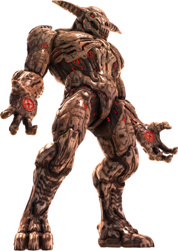

Icon of Sin
The Icon's presence warps reality, damaging the intricate order of our dimension merely by existing within it. If the Icon is allowed to remain unchecked it would lead to the total devastation of Earth, followed by a breakdown of spacetime around the planet. The resulting black hole will eventually drag our entire universe down, casting it into the mouth of Hell as a conquest to be absorbed by the Dark Realm.
"As it is written in the prophecies of ancient Sentinel scripture, the Titans - towering elder demons of the infernal age - would return, unearthed from their immortal slumber. The Titans are believed to be harbingers of the end-times, primordial forces of chaos and destruction."
